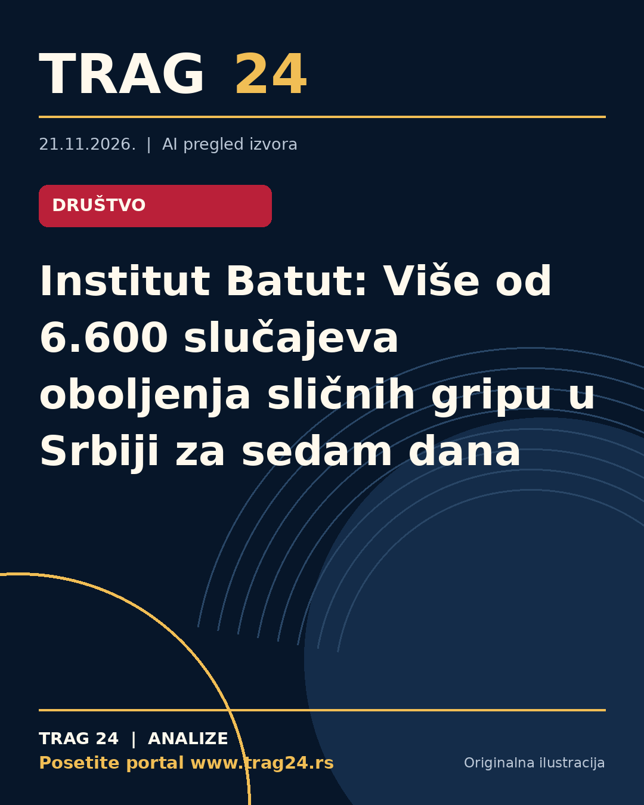

Institut Batut: Više od 6.600 slučajeva oboljenja sličnih gripu u Srbiji za sedam dana

ŠTA SE DOGODILO
Institut za javno zdravlje Srbije „Dr Milan Jovanovic Batut“ saopštio je da je u periodu od 9. do 15. novembra zabeleženo 6.630 slučajeva oboljenja sličnih gripu. Takođe je registrovano 10.876 slučajeva akutnih respiratornih infekcija u istom periodu.
HRONOLOGIJA
Tokom sedmice od 9. do 15. novembra prikupljeni su podaci o oboljenjima. Upoređujući sa prethodnom nedeljom, zabeležen je opadajući trend incidencije i niži broj akutnih respiratornih infekcija.
ŠTA NAVODE IZVORI
Izveštaji oba izvora, Danas i Insajder, prenose istu ključnu informaciju o broju zabeleženih slučajeva i ističu da intenzitet aktivnosti virusa gripa ostaje na osnovnom nivou, ispod epidemijskog praga. Takođe se navodi da je najviša stopa obolevanja kod dece mlađe od četiri godine, kao i kod školske dece, prema podacima Insajdera.
ŠTA JE POTVRĐENO
Potvrđeno je da je ukupan broj slučajeva oboljenja sličnih gripu bio 6.630, dok je broj akutnih respiratornih infekcija iznosio 10.876. Incidencija je opadajuća u odnosu na prethodnu nedelju, a intenzitet virusa je ispod epidemijskog praga. Najviše obolelih je među decom mlađom od četiri godine.
ŠTA NIJE POTVRĐENO
Nije potvrđeno da je došlo do bilo kakvog povećanja aktivnosti virusa iznad epidemioloških praga, niti postoje podaci o težini oboljenja ili posledicama po hospitalizacije ili smrtne ishode. Razlike u navodima o udelu školskog uzrasta u obolevanju nisu detaljno razjašnjene.
ŠTA OSTАJE OTVORENO: Ostaje nejasno kako će se trendovi razvijati u narednim nedeljama i da li će doći do povećanja broja obolelih, kao i da li će druge starosne grupe biti značajnije pogođene. Takođe je nepoznato da li će biti preduzete dodatne epidemiološke mere.
Izvori
- https://www.danas.rs/vesti/drustvo/batut-objavio-nove-podatke-vise-od-6-600-slucajeva-oboljenja-slicnih-gripu-za-sedam-dana/
- https://insajder.net/prenosimo/batut-zabelezeno-6630-slucajeva-oboljenja-slicnih-gripu
Ova analiza je pripremljena uz pomoć veštačke inteligencije na osnovu javno dostupnih izvora. Navodi izvora nisu nužno nezavisno potvrđeni.